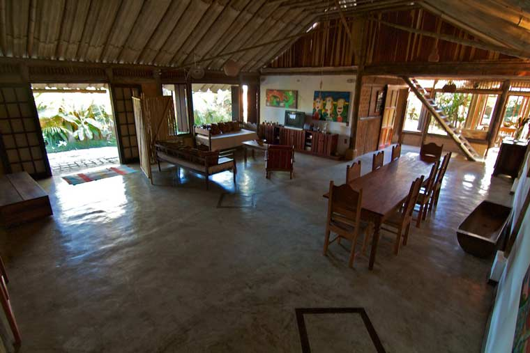
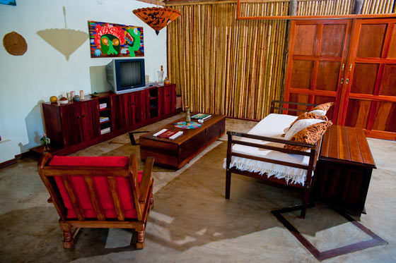
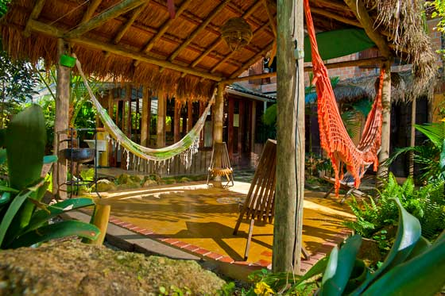
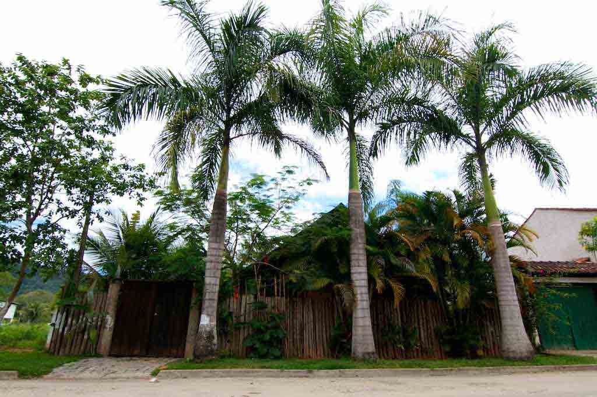

Casa de Bambu
Algumas fotos e informações
O salão possui um vão livre de 12 metros de comprimento por 5 metros de altura, nele há uma extensa mesa de madeira própria para confraternizações, uma TV de 29', aparelho DVD e internet wireless.
Na cozinha com vista para o jardim disponibilizamos geladeira, fogão, liquidificador, microondas e todos utensílios necessários para um jantar elaborado ou aquele rápido lanchinho.
O acesso é pemitido desde que se mantenha o local limpo e organizado. O supermercado se encontra apenas 500m de distância.
Sinta-se em casa!
Abaixo algumas fotos do nosso espaço.

Venha desfrutar de nosso espaço

Salão com área de TV

Área externa com redes

A área de entrada e estacionamento

O trabalho artesanal de bambu dá um toque especial ao espaço